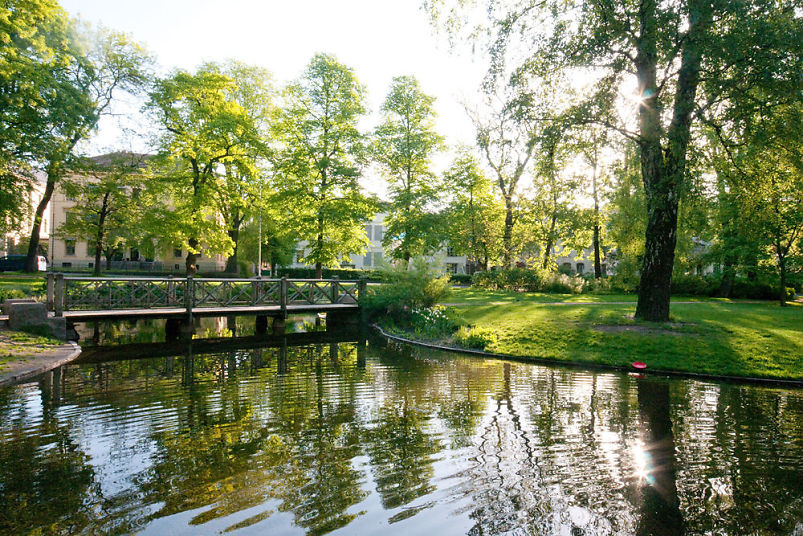
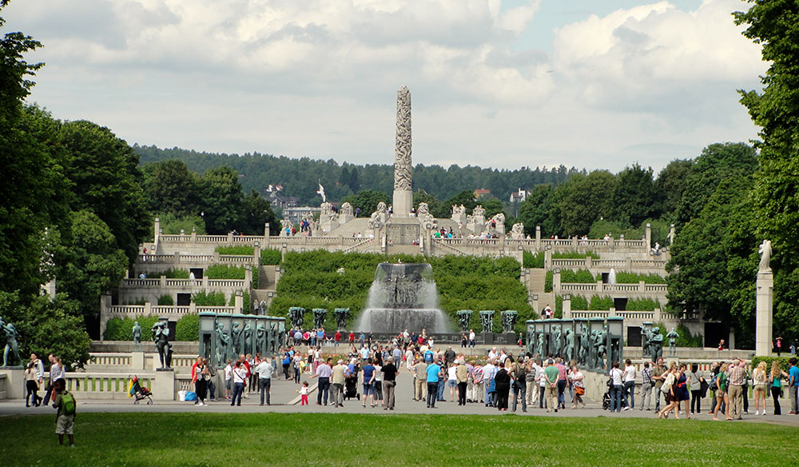

Slottsparken

The dam Kongespeilet located in Queen Park which is part of the palace park behind the Royal Palace.
Palace park is Oslo's central city park. The park is located around the Royal Palace and the Palace Square. The park consists of large lawns under tall trees, paths, avenues and landscaped water surface. A portion of the park called Queen Park and is an area that was established as park already in 1751. Palace Park is a protected cultural monument, and managed by the castle's gardeners.
close
Frognerparken

Picture of frognerparken
Address: Kirkeveien, 0268 Oslo
Largest park in oslo central urban area, making it one of the largest and well-known attractions. You will find, among other things, the largest rose collection here, which corresponds to 14 000 plants spread over 150 different plant species. But what stands out the most and makes it such a popular attraction is due to vigelands Park. This is one of Norway's and oslos most visited attractions, with around one million visitors each year. The park consists of many statues and sculptures, over 200. Some of those worth mentioning are, sinnataggen, monolitten and livshjulet.
close